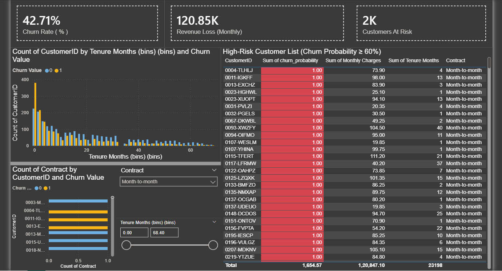

Projects

Portfolio Website
Modern animated portfolio built with HTML, CSS & JS.

Customer Churn Prediction + Retention dashboard
Machine learning model to predict telecom customer churn using Python & SQL with Power BI dashboard insights, EDA, and predictive analysis for retention improvement.

AI-Driven Predictive Analytics for Security Breaches
The project is to develop a predictive analytics tool that uses machine learning and statistical models to forecast potential security breaches based on historical data.